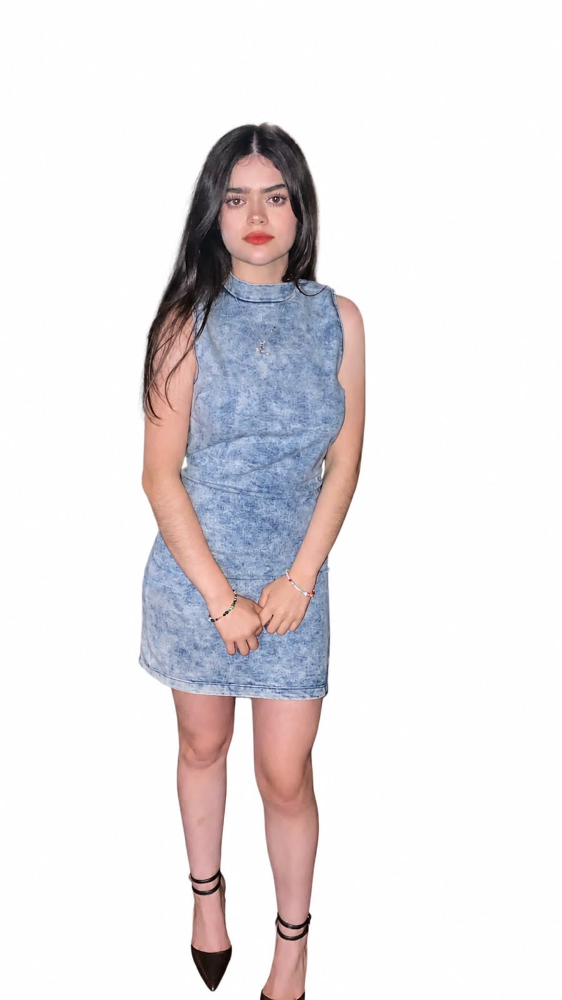

Farmacovigilancia
Seguimiento de tratamientos farmacológicos y posibles reacciones adversas; revisión de expedientes e identificación de posibles interacciones medicamentosas.
Química Farmacéutica Bióloga
Experiencia en supervisión de operaciones, aplicaciones clínicas y equipos de diagnóstico, con formación en farmacovigilancia e investigación preclínica. Trayectoria en entornos hospitalarios, de investigación y trabajo en campo.
Áreas de práctica
Una práctica profesional que integra seguimiento de seguridad, diagnóstico in vitro y coordinación operativa en campo.
Seguimiento de tratamientos farmacológicos y posibles reacciones adversas; revisión de expedientes e identificación de posibles interacciones medicamentosas.
Aplicaciones clínicas en hematología, HbA1c, perfil lipídico, uroanálisis y glucómetro, con atención al control de calidad.
Supervisión de personal, planeación de rutas, capacitación en campo e implementación de equipos para unidades de salud.
Experiencia profesional
Operaciones de diagnóstico, seguridad farmacológica e investigación experimental en contextos clínicos y científicos.
Supervisora de operaciones
Farmacovigilancia
Servicio social · Asistente de investigación
Diagnóstico in vitro
Áreas y equipos de diagnóstico clínico para aplicaciones en unidades de salud.
Hematología
Hemoglobina glucosilada
Perfil lipídico
Uroanálisis
Glucosa
Aplicaciones técnicas declaradas: instalación, puesta en marcha, capacitación, procesamiento de muestras y control de calidad.
Contribuciones profesionales
Experiencia aplicada en tres entornos: unidades de salud, investigación preclínica y atención hospitalaria.
Instalación y puesta en marcha de equipos, capacitación de profesionales y resolución de incidencias operativas en unidades de salud.
Manejo de modelos animales, procedimientos experimentales y análisis de datos con ANOVA y prueba de Tukey.
Revisión de expedientes clínicos y seguimiento de tratamientos, reacciones adversas e interacciones medicamentosas.
Educación e idiomas
Formación profesional en química farmacéutica biológica y preparación técnica en laboratorio clínico.
Licenciatura en Química Farmacéutica Biológica
Técnico Laboratorista Clínico

Dara Valenzuela / QFBPerfil & contacto
Química Farmacéutica Bióloga con experiencia en operaciones, aplicaciones clínicas y equipos de diagnóstico; formación en farmacovigilancia e investigación preclínica.
Para colaboraciones profesionales, capacitación o proyectos en diagnóstico y salud, puedes contactarme directamente.